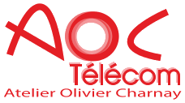
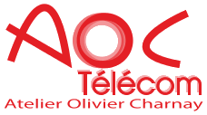

Mes Expériences Professionnelles :
J’ai pu effectuer mon stage d’observation de troisième en février 2020 au sein de l’entreprise de télécommunications AOC Télécom à Clermont Ferrand
où j’ai eu un avant goût des métiers des télécommunications et réseaux.
Puis j’ai réitéré l’expérience dans la même entreprise (AOC Télécom),
cette fois ci je n’étais pas observateur mais acteur car j’y ai travaillé en tant que saisonnier au mois de juillet 2023.
Cette expérience était mieux et plus concrète en travaillant presque de la même façon que les employés.
Travail réalisé : J'ai pu aller faire des raccordements de prise réseaux dans une baie informatique d'un ehpad en construction,
installation d'un réseau sans fil avec la pose de bornes wifi, détecteur de mouvementent, changement de matériel téléphonique dans différentes entreprises.
Résultat : j’ai pu acquérir des compétences dans différents domaines tels que le câblage de courant faible, l’installation de matériel tel que des bornes wifi,
des prises réseaux, des détecteurs.
 
